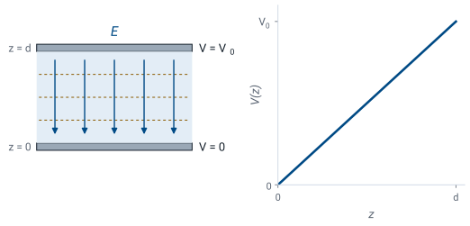
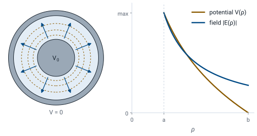
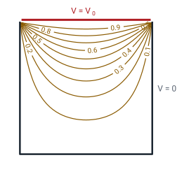

L23 - Boundary Value Problems and Electric Potential#
Boundary Value Problems and Electric Potential
Today we find the potential from the voltages on the conductors, without knowing where the charge sits.
Lesson 23 · Module 2: Electrostatics · Maj Ellis · Dr. Neil Rogers
Learning Objectives
- I can calculate the electric field from the scalar electric potential in a variety of geometries.
Lesson 22 found the potential by integrating over charges we already knew. In a capacitor or a cable we know something different: the voltage on each conductor. The charge on the conductors arranges itself to produce those voltages, and we do not know in advance where it sits. Today we combine Gauss’s law with \(\mathbf{E} = -\nabla V\) to get a single differential equation for the potential, Poisson’s equation, and its charge-free form, Laplace’s equation. We prove that a solution matching the conductor voltages is the only one, then solve the equation for the parallel-plate capacitor and the coaxial line, and find the field from each solution.
Where We Were
Lesson 21: Gauss’s law in point form. Lesson 22: the field from the potential.
Lesson 21 applied the divergence theorem to Gauss’s law and found its point form: the divergence of the electric flux density \(\mathbf{D}\) at a point equals the volume charge density \(\rho_v\) there. In a simple material, Lesson 2’s linear, isotropic, homogeneous kind, \(\mathbf{D}\) is the permittivity times the electric field. Lesson 22 showed that the static field is the negative gradient of the scalar potential \(V\). These three statements are all we need today.
Why a Boundary Value Problem
Known: the voltage on each conductor.
Unknown: where the charge sits.
Wanted: an equation for \(V\) that needs only the voltages on the boundaries.
Coulomb’s law and the potential integral of Lesson 22 both start from known charges. Connect a \(10\) V supply across a capacitor, though, and what we know is the voltage. Charge flows onto the plates until the potential difference between them is \(10\) V, and it spreads over each plate in whatever pattern the geometry demands. To find the field, we need an equation that takes the voltages on the conductors, the boundaries of the region, and returns the potential everywhere between them. A problem posed this way is called a boundary value problem.
Poisson’s Equation
Start from Gauss’s law in point form and write \(\mathbf{D}\) as \(\epsilon\mathbf{E}\). In a homogeneous material, \(\epsilon\) is the same at every point, so it does not change with position and comes out of the divergence. Next replace the field with the negative gradient of the potential. The divergence of a gradient is the Laplacian from Lesson 17, \(\nabla\cdot\nabla V = \nabla^2 V\). Dividing by \(-\epsilon\) gives Poisson’s equation: one second-order differential equation for one scalar unknown, with the charge density as its source.
Laplace’s Equation
Where there is no charge, \(\rho_v = 0\):
The space between the conductors of a capacitor or a cable holds no free charge: the charge sits on the conductor surfaces, which are the boundaries of the region. There Poisson’s equation loses its source term and becomes Laplace’s equation. The Laplacian takes a different form in each coordinate system, and Lesson 17 derived them; the rectangular and cylindrical forms are shown here. We choose the system that matches the shape of the conductors, so that each boundary sits where one coordinate is constant.
Checking a Potential
Lesson 22’s potential, \(V = 10\left(x^2 - y^2\right)\) V:
It obeys Laplace’s equation, so the region holds no charge.
Lesson 22 claimed that the potential \(V = 10(x^2 - y^2)\) V could exist in a region with no charge. Laplace’s equation is the test. The second derivative with respect to \(x\) is \(20\), the second derivative with respect to \(y\) is \(-20\), and \(V\) does not depend on \(z\). The sum is zero at every point, so the divergence of \(\mathbf{D}\) is zero and no charge sits anywhere in the region. A potential such as \(V = 10x^2\) fails the test: its Laplacian is \(20\), and Poisson’s equation says the region must hold a uniform charge density \(\rho_v = -20\epsilon\).
The Solution Is Unique
Two solutions \(V_1\), \(V_2\) with the same boundary values. Let \(W = V_1 - V_2\):
Suppose two different potentials both satisfy Laplace’s equation and both take the given values on the conductors. Their difference \(W\) also satisfies Laplace’s equation, because the Laplacian of a difference is the difference of the Laplacians, and \(W\) is zero on every boundary. The product rule for the divergence gives the second line, and the last term vanishes because \(\nabla^2 W = 0\). Integrate over the region and apply the divergence theorem from Lesson 17: the volume integral equals a surface integral over the boundary, where \(W = 0\), so both are zero. An integral of a square that is never negative can be zero only if \(\nabla W = 0\) everywhere, so \(W\) is constant, and since it is zero on the boundary, it is zero everywhere: the two solutions are the same. The practical payoff is large: any potential that satisfies Laplace’s equation and the boundary values is the answer, no matter how we found it, even by guessing.
The Parallel-Plate Capacitor

Plates much wider than \(d\): \(V\) depends on \(z\) alone.
Two conducting plates sit parallel to each other, the lower one at \(z = 0\) held at \(V = 0\) and the upper one at \(z = d\) held at \(V = V_0\). When the plates are much wider than their separation, the field near the middle does not know where the edges are, and the potential cannot change in the \(x\) or \(y\) direction: every point at the same height looks the same. We ignore the fringing field near the edges. Then the potential depends on \(z\) alone, and Laplace’s equation in rectangular coordinates keeps one term.
Solving Between the Plates
A function whose second derivative is zero has a constant first derivative, \(dV/dz = A\), and integrating once more adds a second constant: \(V\) is a straight line. The two boundary values fix the two constants. At the lower plate, \(V(0) = B = 0\), and at the upper plate, \(V(d) = Ad = V_0\). The potential climbs linearly from one plate to the other, as the figure shows, and the field is uniform, pointing from the high plate to the low one, with magnitude \(V_0/d\). A \(10\) V supply across plates \(1\) mm apart produces \(10\) kV/m. By uniqueness, this is the only answer.
The Coaxial Line
Inner conductor at \(V_0\), radius \(a\); outer conductor at \(0\), radius \(b\).
Now hold the inner conductor of a coaxial line at \(V_0\) and the outer conductor at zero. The line is long and round, so the potential between the conductors cannot depend on the angle \(\phi\) or on the position \(z\) along the line: only \(\rho\) remains in Laplace’s equation. Multiplying by \(\rho\) leaves a derivative equal to zero, so the quantity inside it is a constant \(A\). Dividing by \(\rho\) gives \(dV/d\rho = A/\rho\), and integrating gives a logarithm plus a second constant \(B\). This is the same logarithm Lesson 22 found around an infinite line of charge.
Solving Between the Conductors
The outer boundary value fixes \(B\): substituting it back and combining the logarithms leaves \(V = A\ln\rho - A\ln b = -A\ln(b/\rho)\). The inner boundary value then fixes \(A\). The result starts at \(V_0\) on the inner conductor, where \(\rho = a\), and falls to zero at the outer one, where \(\ln(b/b) = 0\). It falls along a logarithm, not a straight line: most of the potential drop happens close to the inner conductor. Check the result in Laplace’s equation: \(\rho\ dV/d\rho = -V_0/\ln(b/a)\) is a constant, so its derivative is zero.
The Field in the Coax

The negative gradient in cylindrical coordinates keeps only its \(\rho\) term. The derivative of \(\ln(b/\rho) = \ln b - \ln\rho\) is \(-1/\rho\), which gives the field. It points radially outward, from the inner conductor at high potential to the outer one at ground, and the equipotentials are circles around the axis. Its magnitude falls as \(1/\rho\), so the strongest field in the cable sits right at the surface of the inner conductor, which is where dielectric breakdown starts when a cable is driven too hard. Lesson 20 found the same \(1/\rho\) field from Gauss’s law, written in terms of the charge per unit length \(\rho_\ell\) on the inner conductor instead of the voltage.
Voltage and Charge on the Coax
Match the two forms of the same field:
Charge per meter, per volt, set by geometry alone.
Laplace’s equation gave the field in terms of the voltage \(V_0\), and Gauss’s law gave it in terms of the charge \(\rho_\ell\) on each meter of the inner conductor. Both describe the same field, so they must be equal, and the factor of \(1/\rho\) cancels from both sides. The result says how much charge the inner conductor holds for each volt across the line. It depends only on the permittivity of the dielectric and the ratio \(b/a\), not on the voltage. Lesson 25 gives this ratio its name: it is the capacitance per unit length \(C'\) that Lesson 6 quoted without derivation.
Worked Example: RG-58 at 10 V
\(a = 0.405\) mm, \(b = 1.475\) mm, \(\epsilon_r = 2.25\), \(\ln(b/a) = 1.293\).
Quantity |
Value |
|---|---|
\(\vert\mathbf{E}\vert\) at \(\rho = a\) |
\(19.1\) kV/m |
\(\vert\mathbf{E}\vert\) at \(\rho = b\) |
\(5.24\) kV/m |
\(V\) at \(\rho = 0.94\) mm, halfway |
\(3.49\) V |
\(\rho_\ell\) |
\(0.968\) nC/m |
Worked example — the fields inside RG-58
Put \(10\) V on the inner conductor of RG-58 with the shield grounded. The field at the surface of the inner conductor is
and at the shield, \(\rho = b\), it is smaller by the ratio \(a/b\): \(19.1 \times 0.405/1.475 = 5.24\) kV/m. Halfway across the dielectric, at \(\rho = 0.94\) mm, the potential is
so two thirds of the voltage drop happens in the inner half of the gap. The charge on each meter of the inner conductor is
which is \(96.8\) pF/m times \(10\) V: the RG-58 \(C'\) from Lesson 6.
Laplace’s Equation as an Average
From the difference quotient, on a grid of spacing \(h\):
Laplace’s equation has a simple meaning that also gives a way to solve it on a computer. The first derivative halfway between grid points is a difference quotient, as in Lesson 3: \(\left[V(x + h) - V(x)\right]/h\) on one side and \(\left[V(x) - V(x - h)\right]/h\) on the other. The second derivative is the difference of those two, divided by \(h\) again, which gives the first line. Do the same in \(y\), add, and set the sum to zero. Solving for \(V(x, y)\) says the potential at each point is the average of its four neighbors: east, west, north, and south. So a charge-free region can have no peak and no valley in its potential; the largest and smallest values sit on the boundaries.
Solving by Averaging

Center: \(V = V_0/4\), by symmetry.
The figure solves a problem with no simple formula: a long square trough with three walls grounded and an insulated lid held at \(V_0\). A short Python loop sets every interior grid point to the average of its neighbors, sweeps the grid again and again until nothing changes, and draws the contours, labeled as fractions of \(V_0\). The result needs no formula, and uniqueness guarantees it is the answer. One check is easy: put \(V_0\) on all four sides instead of one, and the potential is \(V_0\) everywhere inside. That case is the sum of four copies of this one, rotated, so each copy contributes \(V_0/4\) at the center, and the computed contours pass through \(0.25\) there. Commercial field solvers work on the same principle, with finer grids and smarter sweeps.
Summary
Symbol / idea |
What it is |
Result |
|---|---|---|
Poisson’s equation |
Gauss’s law with \(\mathbf{E} = -\nabla V\) |
\(\nabla^2 V = -\rho_v/\epsilon\) |
Laplace’s equation |
Charge-free region |
\(\nabla^2 V = 0\) |
Uniqueness |
One solution fits the boundary values |
Any method that fits is right |
Parallel plates |
Linear potential, uniform field |
\(V = V_0 z/d\), \(\vert\mathbf{E}\vert = V_0/d\) |
Coaxial line |
Logarithmic potential |
\(V = V_0\ln(b/\rho)/\ln(b/a)\) |
Coax field |
Strongest at the inner conductor |
\(\mathbf{E} = \hat{\boldsymbol{\rho}}\ V_0/(\rho\ln(b/a))\) |
Charge per volt |
Coax, from Gauss and Laplace |
\(\rho_\ell/V_0 = 2\pi\epsilon/\ln(b/a)\) |
Averaging |
Discrete Laplace |
\(V\) is the mean of its neighbors |
Practice
Where This Is Going
Lesson 24: what the field does at the surface of a conductor and at a boundary between two dielectrics.
Lesson 25: charge per volt is capacitance.
Today every boundary was a conductor held at a known voltage. Lesson 24 asks what happens to the field right at a boundary: at the surface of a conductor, where the charge we could not locate today actually sits, and at the boundary between two different dielectrics. Lesson 25 puts today’s solutions to work. The charge per volt we found for the coax is its capacitance per unit length, and the same steps give the capacitance of the parallel-plate capacitor.
Before Lesson 24, read sections 5.18 through 5.22 of Ellingson, Electromagnetics, Vol. 1.